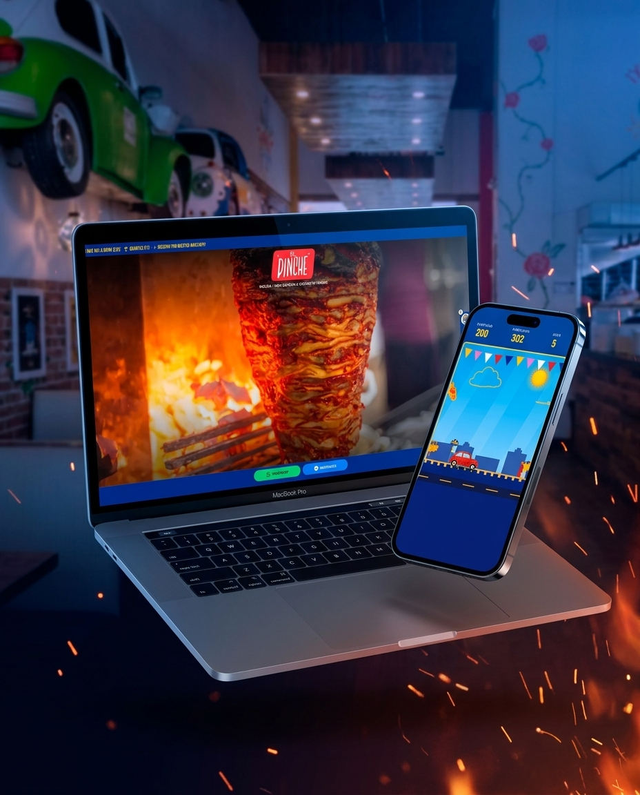
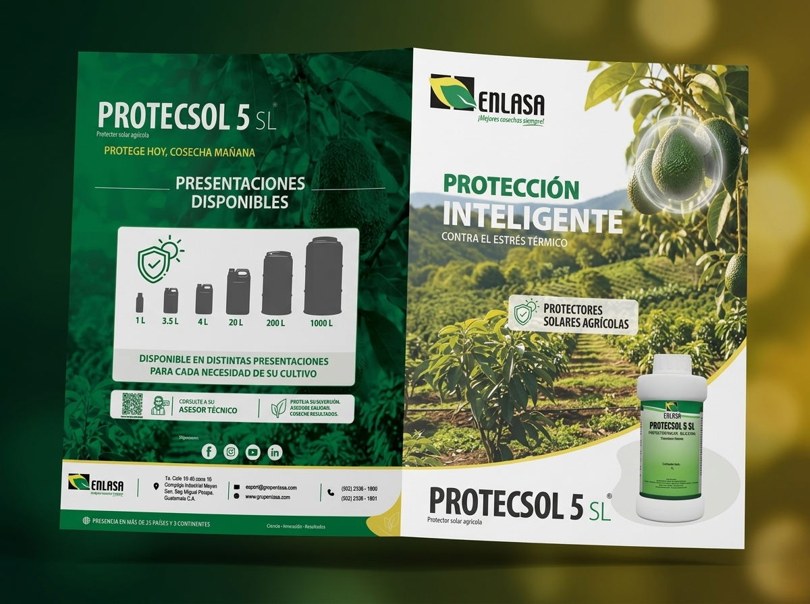
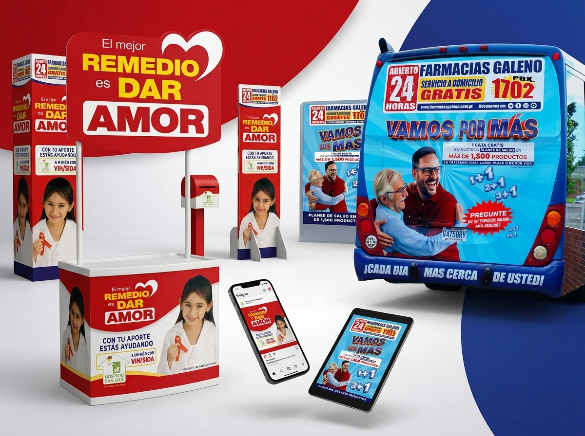
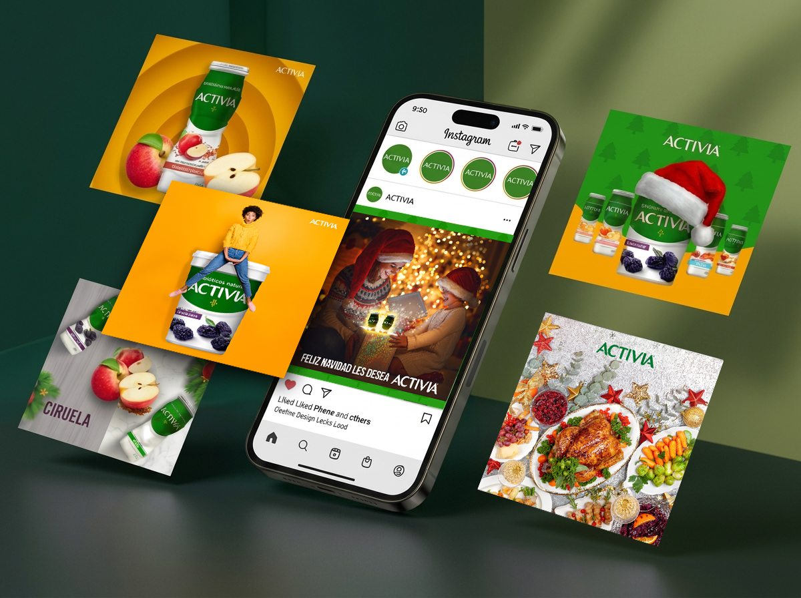
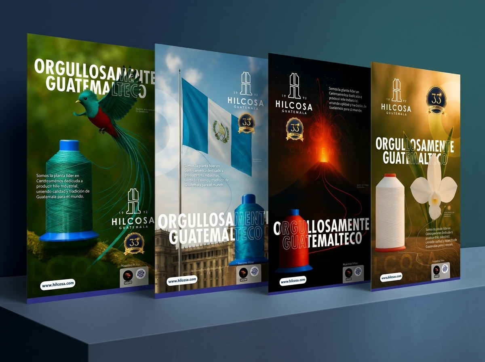
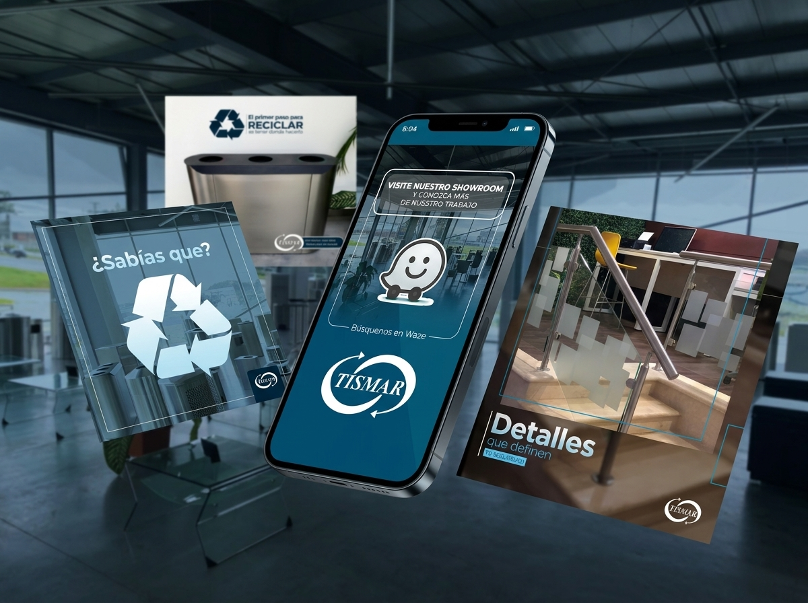
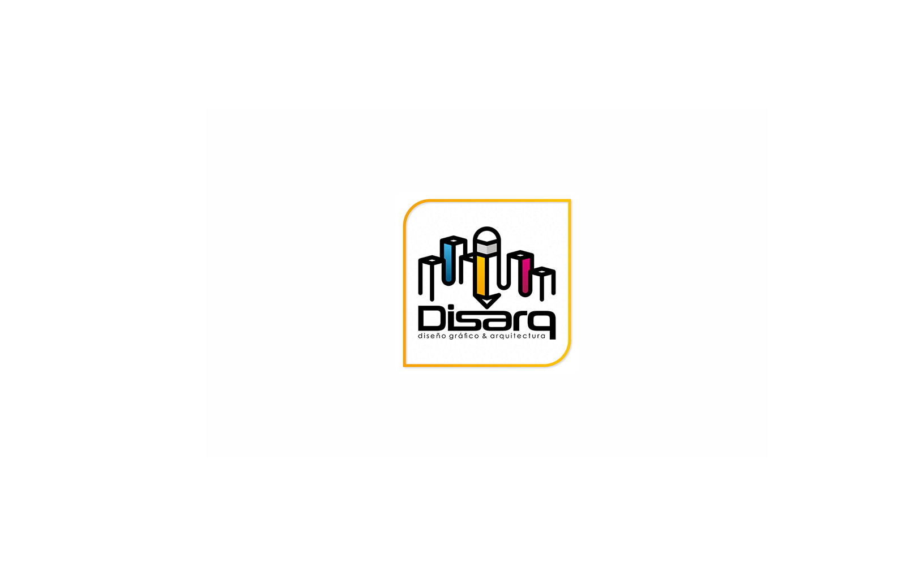
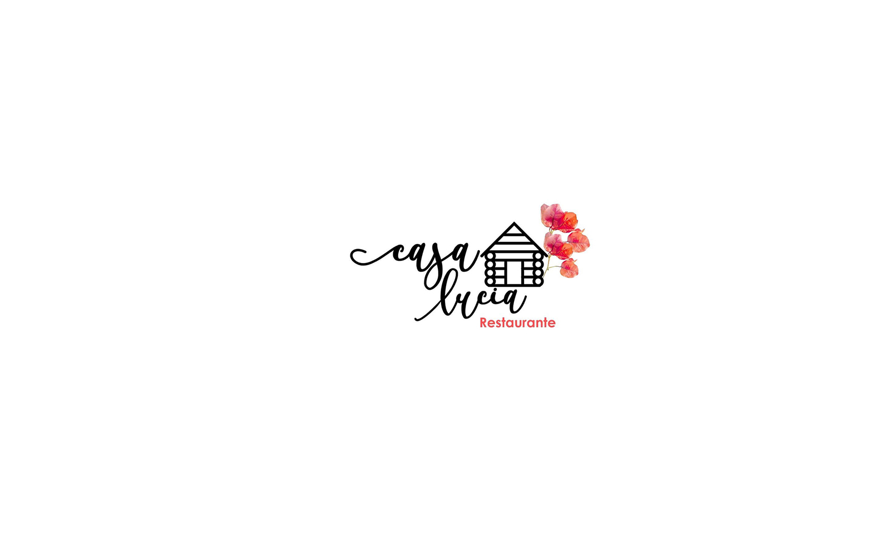

[ Estrategia & ROI ]
Contenido que sí vende
Cómo convertimos un calendario editorial en un motor de resultados medibles.
Diseñador Gráfico Senior | Creativo Digital
Transformo ideas en experiencias visuales que construyen marcas, comunican con intención y generan valor.
+14 años desarrollando identidades que destacan.
SOBRE MÍ
Soy César Alfaro, Diseñador Gráfico Senior y Creativo Digital. Más de una década construyendo identidad de marca, campañas y piezas en movimiento para clientes que necesitan marcar la diferencia y generar resultados.
Mi trabajo une criterio estético, psicología visual y enfoque en resultados de negocio: identidad corporativa, comunicación visual, publicidad, dirección de arte y contenido digital pensados para que cada marca comunique con intención y genere valor.
Conceptualizo, diseño y cuido cada detalle, siempre con la mirada puesta en los objetivos de marca y de negocio.
+14
AÑOS DE EXPERIENCIA
21
MARCAS EN MI PORTAFOLIO
360°
VISIÓN DE MARCA
6
ESPECIALIDADES
FILOSOFÍA
“Construyo identidades y piezas visuales mediante un equilibrio entre criterio estético, psicología visual y enfoque en resultados de negocio.”
César Alfaro / Diseñador Gráfico Senior · Creativo Digital
LO QUE HAGO
Cada proyecto parte de entender el objetivo de la marca y del negocio. Diseño la cara visible y cuido que todo el sistema comunique con intención.
Identidades visuales construidas con criterio estético y visión de negocio, pensadas para aportar valor de marca y destacar frente a la competencia.
Diseño estratégico orientado a la conversión y a las ventas: cada pieza se crea para comunicar con intención y llevar al público a la acción.
Material POP/BTL y piezas de punto de venta que captan la atención justo donde se toma la decisión de compra.
Contenido dinámico en movimiento y campañas multiplataforma para mantener a la marca relevante en cada pantalla.
Diseño que realza el producto y su valor percibido, con la comunicación visual cuidada hasta el último detalle.
Coherencia visual entre identidad, campañas y puntos de contacto, con flujos de trabajo ágiles.
PORTAFOLIO






TRANSFORMACIÓN REAL
Arrastra la línea para ver la evolución visual y comercial. Así transformo marcas genéricas en activos visuales de alto valor percibido.





ANIMACIÓN DIGITAL
Motion graphics diseñados para pantallas reales y entornos comerciales: mupis digitales, punto de venta, redes sociales y formatos especiales que convierten miradas en clientes.
CONFÍAN EN MI TRABAJO


CÓMO TRABAJO
Analizo tu modelo de negocio, tu público objetivo y tus metas antes de trazar la primera idea visual.
Defino la ruta visual y el mensaje comercial: qué debe comunicar la marca para conectar con la audiencia correcta y diferenciarse.
Diseño y desarrollo el sistema visual o la pieza a la medida, cuidando cada detalle de ejecución.
Lanzo, reviso el impacto frente a los objetivos y ajusto para que el trabajo genere atención y resultados.
SIGUIENTE PASO
Cuéntame en qué etapa está tu proyecto y cuál es tu objetivo. Lo analizamos juntos y te digo cómo dar el siguiente paso.
Contenido corto pensado como sistema: cada pieza aplica estrategia, innovación visual y datos reales para escalar negocios, no solo para sumar vistas.
Cómo convertimos un calendario editorial en un motor de resultados medibles.
Detrás de escena de las piezas visuales que detienen el pulgar en tres segundos.
El sistema visual detrás de identidades que crecen sin perder consistencia.
Metodología & Enfoque Comercial
Mueve el cursor o desliza sobre el cubo para rotarlo libremente